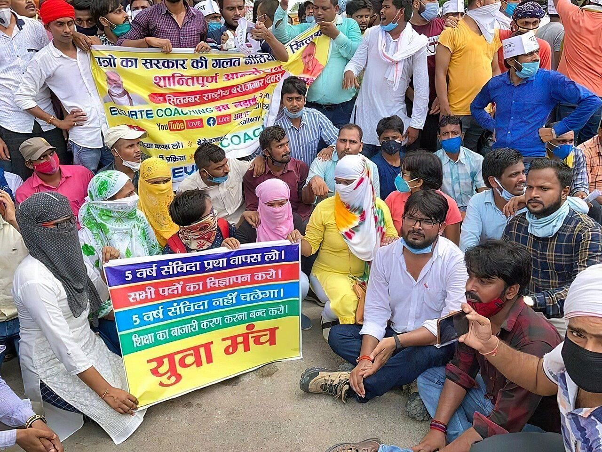
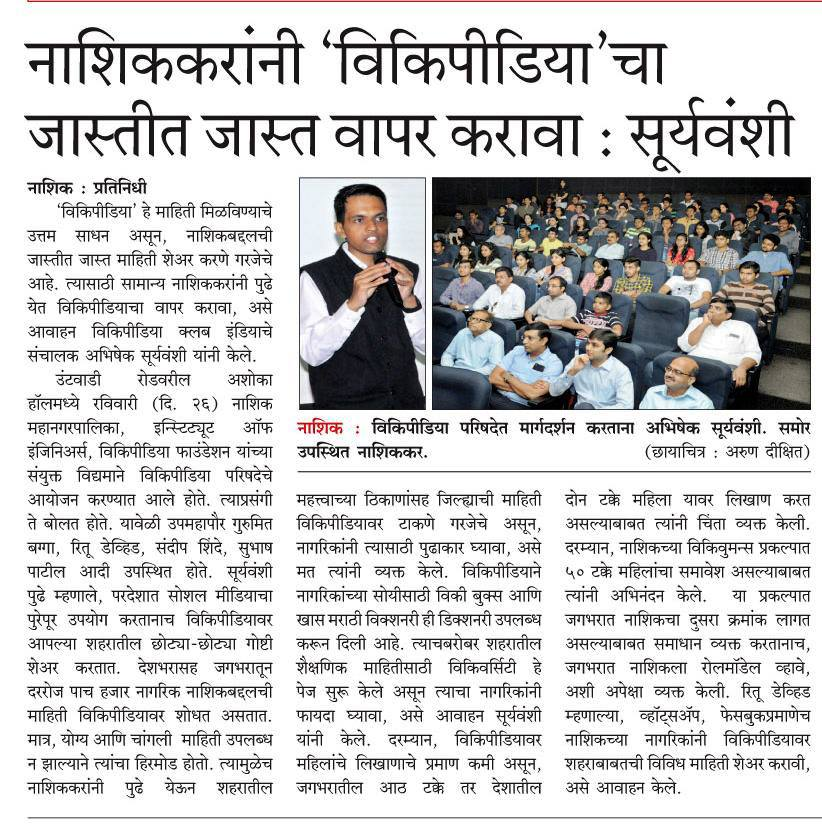

Press desk
What the media reported.
External reporting (open in new tab). We summarise; always verify on the original page.
CJP: how the collective became an online sensation
From courtroom insult to millions of followers in under a week.
Protests in 40°C heat
Why “cockroach” protesters stayed on the streets.

Encyclopaedia entry
Formation, manifesto, leadership, timeline.
No electoral ambitions
Student-led reform campaign — Tiranga welcome, not party flags.

Gen Z ‘cockroaches’ on the streets
Hunger strike and education-leak anger as a rallying point.
Card photos: illustrative Wikimedia Commons images (Delhi protests / youth / press). Not official BBC/Print photography — links open the original articles.